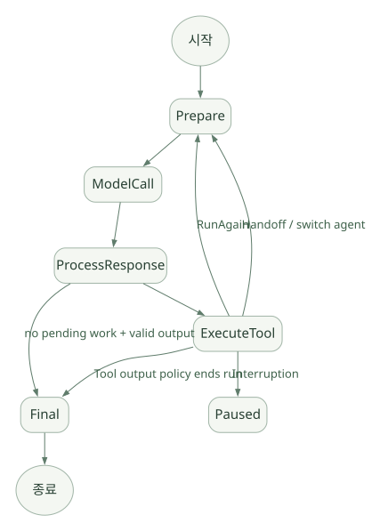

SECOND STUDY / 상태 전이와 모델 입력
상태 전이와 모델 입력
이번 단원의 읽는 관점
RunAgain·Handoff·Final·Interruption 분기를 읽고 최종 Provider 입력의 조립 과정을 연결합니다.
살펴볼 경계Python context와 모델 입력, Turn 상한과 Tool·시간·비용 상한을 구분하세요.
이 페이지의 세부 목차
8. ProcessedResponse와 NextStep 상태 기계#
src/agents/run_internal/run_steps.py의 핵심 NextStep 계열:
NextStepRunAgain: 모델 입력에 Tool 결과/새 항목을 반영한 후 다시 모델 호출.NextStepHandoff: 현재 Agent를 다른 Agent로 전환하고 그 Agent로 Loop 계속.NextStepFinalOutput: 최종 결과를 내고 종료.NextStepInterruption: 승인 등 추가 결정을 위해 일단 멈춤.
가로로 이동해서 읽을 수 있습니다. 도식 크게 보기 ↗

원문의 학습용 도식입니다. 연결 방향·분기 조건·점선·쌍방향 연결을 보존해 세로로 배치했습니다. 실제 구현·의사코드·해석의 구분은 본문을 함께 읽으세요.
도식 원문 보기 (Mermaid)
stateDiagram-v2
[*] --> Prepare
Prepare --> ModelCall
ModelCall --> ProcessResponse
ProcessResponse --> ExecuteTool
ExecuteTool --> Prepare: RunAgain
ExecuteTool --> Prepare: Handoff / switch agent
ExecuteTool --> Paused: Interruption
ProcessResponse --> Final: no pending work + valid output
ExecuteTool --> Final: Tool output policy ends run
Final --> [*]주의: 위 흐름도는 개념을 설명하는 것으로, 실제 예외·Guardrail·Session 저장 및 Hosted Tool 예외 경로는 더 많다. 구체 분기는 turn_resolution.py와 run_steps.py를 병행해 본다. [SRC: S03, S04]
8.1 종료 조건을 정확히 분리#
| 발생 상황 | 결과 경향 | 추가 확인할 조건 |
|---|---|---|
| 모델이 Tool 없이 유효한 최종 출력을 반환 | Final | Output Type·Guardrail·Output Parsing |
| 로컬 Function Tool 하나 또는 여러 개 요청 | 재호출 | 승인·tool_use_behavior·도구 예외 |
| Handoff Tool 호출 | Handoff | 대상 Agent, input filter, history ownership |
| 도구에 승인 필요 | Interruption | 승인 상태, 동시 다른 도구 요청 |
| Tool 반환값으로 실행 종료 가능 | 조건부 Final | tool_use_behavior |
| 허용 모델 Turn 초과 | 예외 | max_turns, error handler·상태 처리 |
한 번의 API 응답 안에 최종 텍스트와 Tool Call이 공존하는 경우, 텍스트가 있다고 무조건 종료하지 않는다. 공식 문서는 요구된 출력 형태의 텍스트가 있고 처리할 Tool Call이 없을 때를 기본 최종 조건으로 설명한다. [DOC: D02]
8.2 max_turns의 의미와 안전 한계#
max_turns는 모델 실행 반복 횟수의 상한이다. Tool 호출 하나하나의 개수 상한도 아니고, 전체 시간 제한도 아니다. None이면 해당 반복 횟수 제한을 풀 수 있으나, 무제한 Tool·비용 실행을 허용해도 안전하다는 의미는 아니다.
다음 제한은 별도의 문제다: (a) Provider 요청 시간, (b) 전체 Run deadline, (c) Tool당 timeout, (d) 동시 도구 수, (e) 토큰·비용 예산, (f) 데이터/네트워크 권한, (g) 부작용 재시도 제한.
9. turn_resolution.py를 읽는 순서#
아래 함수 순서로 읽으면 효과적이다. 실제 호출 관계를 이해하기 위한 탐색 순서이며 모든 실행에서 일렬로 호출된다는 뜻은 아니다.
process_model_response: SDK가 이해할 수 있는 Tool/Handoff/텍스트/호스팅 결과로 응답 분류.execute_tools_and_side_effects: 현재 Turn의 실행 계획을 수행하고 다음 단계를 정함.execute_handoffs: 선택된 Handoff 처리와 새 Agent 전환.check_for_final_output_from_tools: Tool 결과를 최종 출력으로 간주할지 검사.execute_final_output: 최종 출력 처리와 검증·Hook 연계.resolve_interrupted_turn: 승인 등으로 중단된 Turn 재개 처리.get_single_step_result_from_response: 모델 응답을 개별 실행 결과로 정리.
tool_planning.py에 _build_plan_for_fresh_turn, _build_plan_for_resume_turn, _execute_tool_plan, _collect_tool_interruptions 등이 분리되어 있다. 따라서 Tool 실행을 단순 for tool in model.calls: await tool() 수준으로 표현하면 승인·재개·중복 호출 제거·결과 순서·실패 처리를 놓친다. [SRC: S03, S05]
9.1 새 Turn과 Resume의 Tool 계획이 다른 이유#
새 Turn에서는 방금 모델이 생성한 Tool Calls를 처리한다. Resume에서는 이전에 승인 대기였던 호출과 이미 완료된 호출을 구별해야 한다. 단지 RunState에 저장된 요청들을 다시 순회하여 모두 실행하면 부작용이 중복될 수 있다.
[INF] 설계 원리: pending_calls, completed_calls, approval_decisions, tool_outputs를 구분해서 저장하지 않는 프레임워크는 안정적인 중단·재개를 구현하기 어렵다.
10. 최종 모델 입력은 어떻게 구성되는가?#
모델이 보는 입력과 Python 내부 Context 객체는 다르다.
[모델에 전달되는 후보 요소]
현재 Agent instructions / model settings
필요한 tool schemas와 handoff schemas
서버 대화 상태 참조 또는 직전 기록에서 준비한 model input items
사용자 메시지
이전 assistant 응답과 tool result
필요한 경우 input_filter/compaction을 거친 변환된 이력RunContextWrapper.context에 들어있는 Python DB 연결, 인증 객체, 로컬 서비스 객체가 자동으로 모델 입력 문자열로 직렬화되는 것은 아니다. 모델은 Tool 실행의 반환값이나 지시문 생성 코드가 명시적으로 노출한 값만 보게 된다는 점이 핵심이다. 그러나 Tool 결과를 그대로 반환하면 결국 민감정보가 모델 입력으로 들어갈 수 있다. [DOC: D02, D08]
10.1 실제 최종 요청을 역추적하는 법#
- Agent에서
instructions가 문자열인지 콜백인지 확인한다. turn_preparation.get_all_tools/get_handoffs/get_output_schema의 실행 결과를 찾는다.session_persistence.prepare_input_with_session에서 가져온 저장 이력을 확인한다.maybe_filter_model_input과 Handoff 필터링에 따른 변경을 확인한다.- Model Adapter(Responses/Chat Completions)의 입력 변환을 확인한다.
- Tracing/Mock Model에 기록된 실제 요청 형태와 비교한다. 이 마지막 단계는 후속 검증 과제이며 이번 문서에서 캡처했다고 주장하지 않는다.
10.2 Prompt caching의 원리와 SDK에서의 위치#
Provider의 Prompt Prefix Cache는 매번 입력을 보내더라도 앞부분의 모델 계산을 재사용할 수 있는 구조다. SDK에는 run_internal/prompt_cache_key.py의 PromptCacheKeyResolver, model_settings_with_prompt_cache_key 등의 경로가 있다. [SRC: S02]
요청 A: [Instructions][Tool schema][History A][New input]
요청 B: [Instructions][Tool schema][History A][Tool output][Next input]
<------ 재사용 가능한 동일 Prefix 후보 ------>- Cache Key 설정과 실제 Cache Hit는 다르다. 모델/Provider/토큰화/유효기간/요청 형식이 영향을 준다.
- Handoff로 Agent instructions와 Tool schema가 바뀌면 Prefix 재사용 범위가 줄 수 있다.
- Session 압축·History Filter가 오래된 메시지를 다시 쓰면 뒤쪽 동일 기록의 캐시까지 영향을 받을 수 있다.
- 정확한 Cache Hit 비율·절감액은 Provider 사용량 또는 실측이 필요하다. 이 문서는 성능 수치를 제시하지 않는다.
10.3 Context Compression은 자동 장기 기억과 다르다#
공식 Session 중 OpenAIResponsesCompactionSession은 underlying Session의 이력을 압축할 수 있다. 이는 대화 컨텍스트 크기를 관리하기 위한 것으로, 중요 사실을 독립적인 장기 Memory로 정규화·검증하여 보관하는 기능과 동일하지 않다. [DOC: D05]
v0.24.0 릴리스 주의: 승인 대기 상황에서 자동 압축을 지연하는 수정이 포함되었다. 승인/복원에 필요한 원본 항목이 압축으로 사라지거나 변경되면 정합성 문제가 생길 수 있기 때문이다. [DOC: D00]